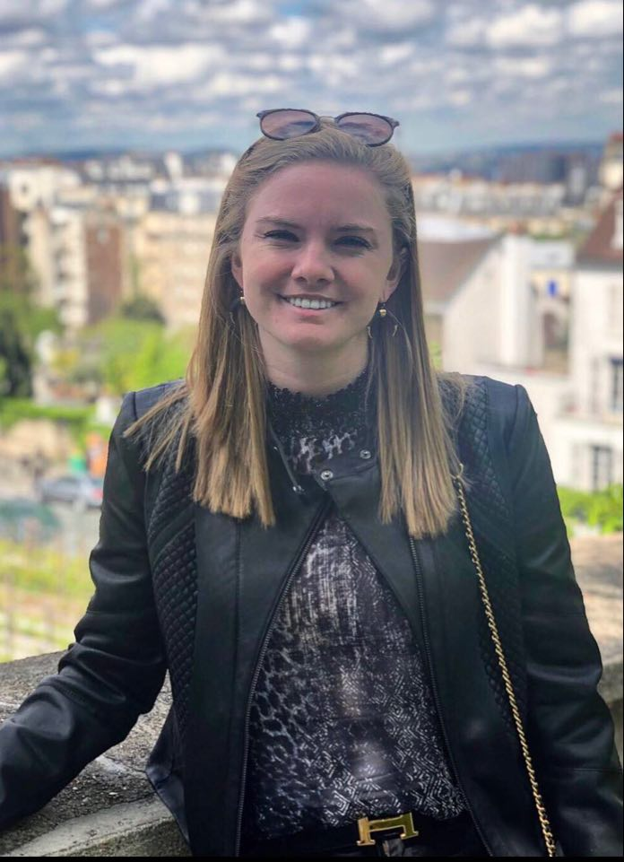

About Me
Hello Everyone, my name is Jennifer Funchess and I am 25 year old here in Atlanta, GA. I was born and raised in the great state of Texas, but made my way east to Georgia when I was 18. I attended the University of Georgia (Go Dawgs!) for four years, and boy were they the best four years of my life! The Grady School of Journalism was an inspiring, creative and motivating place that guided me to a wonderful career in Advertising.
In the Fall of 2017, I started my Advertising career at Omnicom Media Group in Altanta Georgia. For the past three years I have been emerged in the world of Traditional and Streaming Media. The last three years have changed dramatically, and the media world will not stop evolving any time soon. My goal for this Full Stack program is to learn and execut a coding skill set. I believe that having a strong coding foundation will be able to help me be one step ahead in my career search. I am excited for the next six months in this Georgia Tech coding bootcamp!